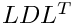

|
Trilinos
|
|
Trilinos
|
Ifpack2 provides incomplete factorizations, relaxations, and domain decomposition operators for linear algebra objects (sparse matrices, operators, and dense vectors and multivectors) provided by the Tpetra package. You may use these operators however you wish: for example as preconditioners in an iterative solver, or as smoothers for algebraic multigrid.
Ifpack2 aims at offering the same functionality as the Ifpack package, though it does not promise backwards compatibility. Ifpack only works for Epetra linear algebra objects; Ifpack2 only works for Tpetra objects.
Why do you want to use Ifpack2? First, if you are using Tpetra, you need to use Ifpack2 if you want incomplete factorizations, relaxations, or domain decomposition. Second, Ifpack2 gives you the same advantages as Tpetra. You can solve problems with more than two billion unknowns, by using 64-bit global indices, yet save memory at the same time by only storing 32-bit local indices. You can use matrices and vectors with any sensible data type, not just double. For example, you can use float to save memory, or an extended-precision type like dd_real or qd_real to improve robustness for difficult problems. Ifpack2 even works with complex-valued data, like std::complex<float> and std::complex<double>. Finally, Ifpack2's algorithms use and produce Tpetra objects, so you can exploit Tpetra's hybrid (MPI + threads) parallelism features without effort.
Ifpack2 implements the following relaxations, smoothers, and related preconditioners:
Gauss-Seidel is actually a special case of SOR, when the damping parameter  . Ifpack2 calls them both "Gauss-Seidel." You may specify the sweep direction: forward, backward, or symmetric (first forward, then backward). We do not currently implement other sweep directions or parallelization schemes (such as red-black ordering), but you may reorder the rows yourself if you have a specific sweep direction in mind.
. Ifpack2 calls them both "Gauss-Seidel." You may specify the sweep direction: forward, backward, or symmetric (first forward, then backward). We do not currently implement other sweep directions or parallelization schemes (such as red-black ordering), but you may reorder the rows yourself if you have a specific sweep direction in mind.
Ifpack2's implementation of (Gauss-Seidel and) SOR is actually a "hybrid" relaxation. This means that it only performs SOR within an MPI process, but does Jacobi-type updates between MPI processes. While this can reduce effectiveness of the algorithms as preconditioners or smoothers, Ifpack2 implements an "L1" option to improve convergence despite this. For details, please refer to the following publication:
A. H. Baker, R. D. Falgout, T. V. Kolev, and U. M. Yang. "Multigrid Smoothers for Ultraparallel Computing." SIAM J. Sci. Comput., Vol. 33, No. 5 (2011), pp. 2864-2887.
For diagonal scaling, see the Ifpack2::Diagonal class. The Ifpack2::Relaxation class implements Jacobi, Gauss-Seidel, SOR, and the symmetric variants of the latter two. The Ifpack2::Chebyshev class implements Chebyshev iteration.
Ifpack2 implements two different incomplete factorizations: ILUT (Ifpack2::ILUT) and RILU(k) (Ifpack2::RILUK). ILUT is a threshold-based incomplete LU factorization, and RILU(k) is a "relaxed" incomplete LU with level k fill.
Both of these only perform the factorization on a matrix in a single MPI process.
Our ILUT implementation factors each MPI process' part of the matrix independently, and treats multiple processes via nonoverlapping domain decomposition. Our RILU(k) implementation's factorization reaches across processes by overlapping off-process entries up to a specified integer level of overlap, and factoring them redundantly on each process. For details on each algorithm and its options, please refer to the specific class' documentation. Also, for ILUT, please refer to the following publication:
Youcef Saad, "ILUT: A dual threshold incomplete LU factorization," Numer. Linear Algebra Appl., Vol. 1 (1994), pp. 387-402.
Finally, Ifpack2 implements additive Schwarz domain decomposition, via the Ifpack2::AdditiveSchwarz class. The user may specify any subdomain solver they wish.
All Ifpack2 operators inherit from the base class Ifpack2::Preconditioner. This in turn inherits from Tpetra::Operator. Thus, you may use an Ifpack2 operator anywhere that a Tpetra::Operator works. For example, you may use Ifpack2 operators directly as preconditioners in Trilinos' Belos package of iterative solvers.
You may either create an Ifpack2 operator directly, by using the class and options that you want, or by using Ifpack2::Factory. Ifpack2::Factory is templated on a specialization of Tpetra::RowMatrix. The Factory will use that template parameter to get all the information that it needs to make a preconditioner of the right type. All the specific Ifpack2 preconditioners are also templated on a specialization of Tpetra::RowMatrix. Some of them only accept a Tpetra::CrsMatrix instance as input, while others also may accept a Tpetra::RowMatrix (the base class of Tpetra::CrsMatrix). They will decide at run time whether the input Tpetra::RowMatrix is an instance of the right subclass.
The ifpack2/test/belos directory includes a test program which shows how to create Ifpack2 operators and use them as preconditioners with Belos iterative solvers. See belos_solve.cpp and belos_extprec_solve.cpp in that directory. The test program is entirely driven by XML input files, which specify the matrix file to be used, as well as parameters for the preconditioner, and the Belos iterative solver type to use.
If you build Belos with examples enabled, the example will build as Ifpack2_tif_belos.exe and will be installed in the packages/ifpack2/test/belos directory.
Use CamelCase, with the first character upper case. Do not prefix with Ifpack2_ or any other indication of the namespace. That prefix exists in Epetra and IFPACK only because the compilers that those packages had to support did not implement namespaces. Ifpack2 requires C++11, so there is no question that namespaces work.
Suppose that you wanted to add a block symmetric

incomplete factorization to Ifpack2. You might call the classBlockILDL or BlockIncompleteSymmetricIndefiniteFactorization.
Use camelCase, with the first character lower case.
There is some debate over the correct template parameters for Ifpack2 preconditioners. I would prefer that they use the same four template parameters as Ifpack2::Preconditioner, but unfortunately they don't. Templating on MatrixType confuses users and complicates Ifpack2's implementation of explicit template instantiation (ETI), but it's the convention. Regardless, MatrixType MUST be a specialization of Tpetra::RowMatrix. If the preconditioner only works for Tpetra::CrsMatrix, accept the matrix as a Tpetra::RowMatrix and check at run time with a dynamic_cast whether it is a Tpetra::CrsMatrix.
Life is easier when Ifpack2 preconditioners implement the Ifpack2::Details::CanChangeMatrix interface (see ifpack2/src/Ifpack2_Details_CanChangeMatrix.hpp). Changing the matrix undoes all initialization. My convention is that changing the matrix to null makes the preconditioner release all matrix-specific allocated state.
This implies that the preconditioner's constructor shouldn't actually do anything, other than set the matrix. Any initialization that depends on the graph structure or communication patterns (Maps, Import/Export, etc.) should happen in initialize().